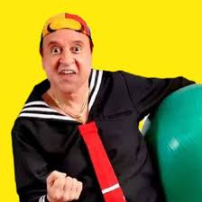

Federico Matalascallando Corcuera o Federico Bardón de la Regueira, más conocido como Quico o por razones legales también como Kiko, es un personaje de la serie de televisión mexicana El Chavo del 8. Es el único hijo de Federico Matalascallando y de Doña Florinda Corcuera. Wikipedia
Creado por: Roberto Gómez Bolaños
Padres: Federico Matalascallando y Florinda Corcuera y Villalpando
Alias: Quico; Kiko
Edad: 8 años
Familia: Matalascallando.
